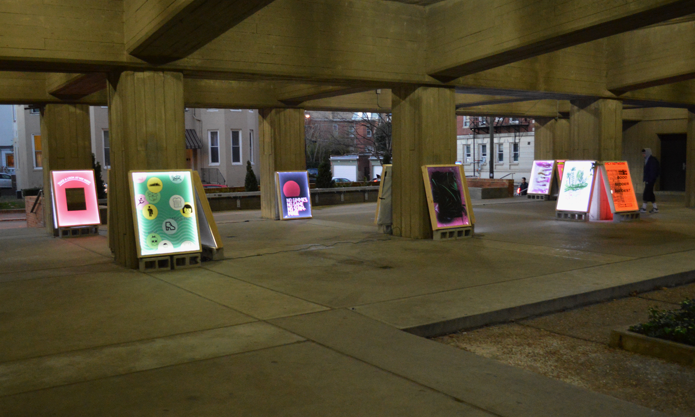
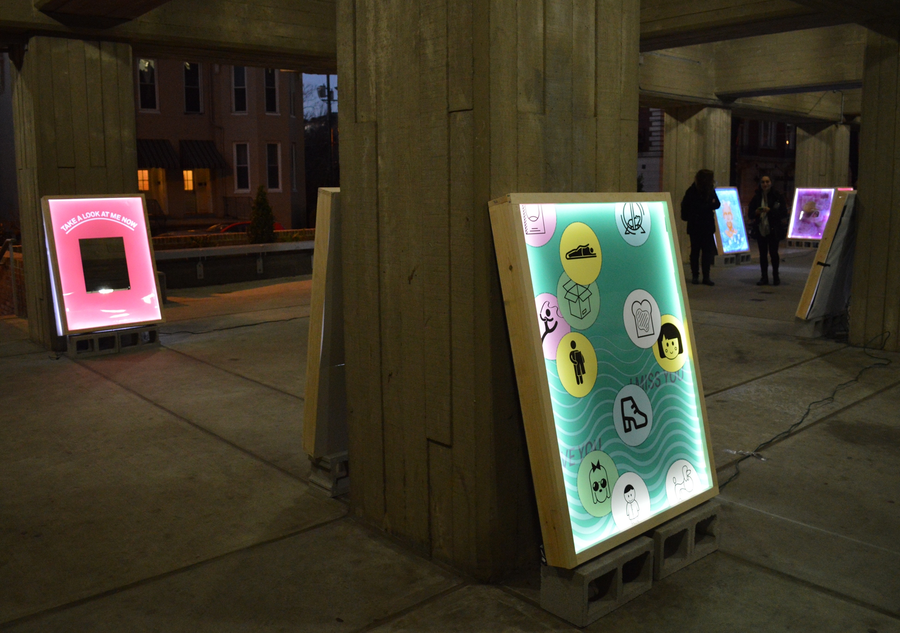
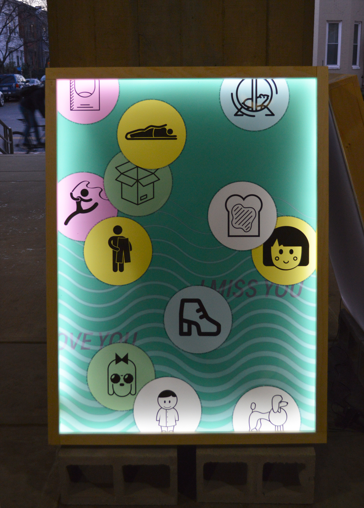

Designer
I Miss You is a 3’x4’ lightbox poster depicting my ideal final experience. The lightbox was not purchased but instead built as a part of the project. This was completed as part of the exhibition Open Night.
  Around each bubble is an authored stream-of-consciousness text:
(hamster in wheel)
The first time I cried so hard I thought I was going to throw up was when I was 7 and I learned my hamster had a tumor and was going to die. His name was Peanut and I didn’t even like him that much I think but I still cried so hard. He developed breasts which actually turned out to be a huge tumor and I laughed about it for a second and then sobbed for hours.
(person in sleeping bag)
I want to live in an ocean of blankets and baby toys because those are the softest things I have ever touched and that is one of my favorite sensations. I would rather touch something soft than something that feels like almost anything else. There are different kinds of soft but I don’t think I can get into that right now but maybe another time. I think if I lived in a nest of soft I would be happy but would also maybe melt into nothing but I don’t know if that would be bad.
(open box)
My sister and I lived in the cardboard box from a new dishwasher for 3 days one time and my parents didn’t even care. At first it was just me and I would put a blanket in there and read The Word Eater and listen to Usher’s album Confessions. Then my sister and I drew on it in chalk and took it outside and it was a fort. Then it rained and got ruined and we had to recycle it and I think I cried.
(gymnast with ribbon)
I always watch Olympic gymnastics with my family and it always makes me feel incredible and terrible at the same time. I used to love it because I was a child and just assumed one day I would be in the Olympics because I also did gymnastics. I found out though that wasn’t going to happen and for a while I was fine with it but now it represents one of the many things I quit as a child that I feel I should have pursued but it is far too late now and my body is rapidly decaying so I will never be able to fly through the air like Shaun Johnson but maybe that’s okay but it still makes me sad sometimes.
(person holding pants)
If I could wear the same pair of pants every day I would. I would take all the best aspects of every pair of pants I’ve ever loved and combine them all and then never wear a different pair of pants every again. I would sew them to my body like a second skin and never have to worry about buying new pants ever again.
(piece of toast)
I don’t know how to define toast without using the word in the definition. It’s just hard hot bread but that doesn’t quite feel right. The only difference between toast and bread is that toast is toasted bread. But again, that doesn’t really help anything. Hard hot bread. I think I would eat pesto toast every day if I could and if I would let myself. I know it has no nutritional value so I try not to eat it too much but if nothing mattered I would only eat pesto toast all the time every day.
(little girl face)
Sally-Jade was the name of my cabbage patch doll and I loved her a lot and she had her own T.V. show. It was a reality T.V. show except she was a baby and had a super mean older sister who would pull her and throw her by her hair. She also had a signature dance that my sister and I still do to this day because it is a really good dance.
(boot)
I originally bought these boots because I was too nervous to tell the girl I didn’t want them after we took the time to meet and try them on and everything. I thought they were so clunky and huge but I also thought maybe in some world I could pull them off? Now they’re my fuck me shoes except I don’t even want to have sex with anyone because strange men really scare me. Regardless, they make my legs look great and that’s what I’ve been looking for my whole life.
(face with bow and sunglasses)
My father is my strongest association with the singer Cher which I think in retrospect is pretty strange but it’s been that way since I was a kid so I haven’t really thought about it until now. We used to listen to Cher’s greatest hits album in the car on the drive to Michigan and it was the best. It turns out my mom hated it but I had no idea and she loves the movie Mighty Aphrodite so it evens out I think.
(round male figure)
Sometimes children just want to wear garbage all the time and you can’t stop them. When my sister was 9 she had pajamas she wore every single night and they were the best pajamas in the world and she loved them so much but I also really loved them. Eventually she got too big and couldn’t wear them anymore and was forced to give them to me and it was one of the best events in my memory. Then I got to wear the pajamas and I was so happy and also so comfortable. Then they got lost in the wash and I was very sad and confused as to how that could have happened.
(dog)
The reason you can see the whites of dog’s eyes is because they evolved that trait specifically to communicate better with humans. They evolved a lot of other traits too specifically to communicate with us and that is amazing. No other animal has done that. Humans and dogs have a special bond and that is not even my opinion that is just scientific fact. Science says that genes are selfish and dogs only do it so they can better survive and procreate but I say it’s because they love us and want to be able to talk to us.